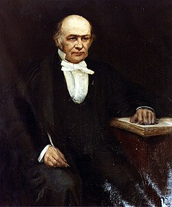
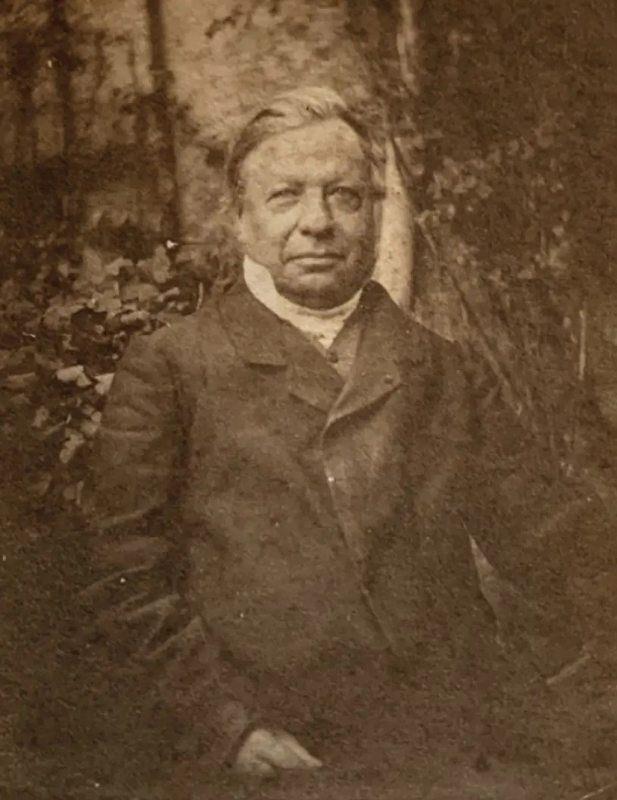

Previous highlights

William Rowan HamiltonWilliam Rowan Hamilton was an Irish mathematician, physicist, and astronomer best known for discovering quaternions and for major contributions to optics, dynamics, and algebra. His work on mechanics, geometric optics, and linear operators strongly influenced the later development of quantum mechanics and modern mathematical physics.
 Joseph Louis Lagrange
Joseph Louis Lagrange18th-century mathematician and physicist who helped reformulate classical mechanics into what we now call Lagrangian mechanics, a cornerstone of theoretical physics. He was basically a mathematical powerhouse who turned dynamics into a clean variational framework, laying groundwork that modern physics (from quantum field theory to general relativity) still leans on heavily.

Joseph LiouvilleFrench mathematician and PhD student of Poisson. He made a lot of great contributions to number theory and complex analysis. In physics, he is remember for his theorem that had a tremendous impact on statistical physics and Hamilton mechanics: the phase space volume of a conserved quantity is constant.

Ebenezer Cunningham
Mathematician known for his contributions in the early days of special relativity. He also contributed with Milikan to the correction of the no-slip boundary condition in high Knudsel number fluids.
Mathematician known for his contributions in the early days of special relativity. He also contributed with Milikan to the correction of the no-slip boundary condition in high Knudsel number fluids.